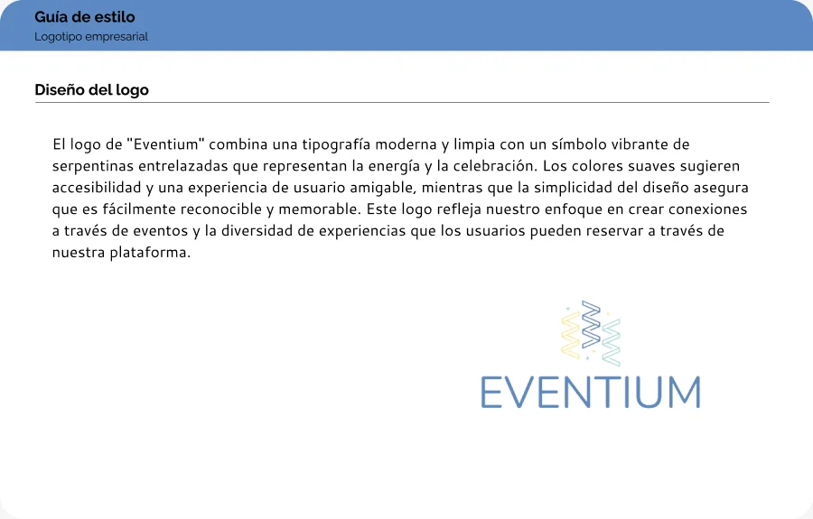
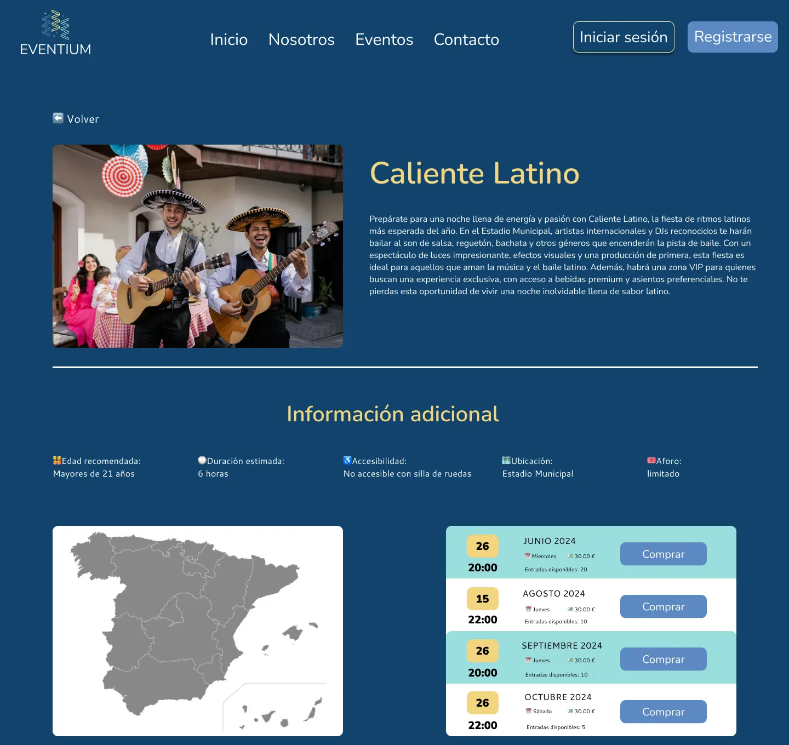

Proyecto de fin de grado (DAW)
Eventium, de la investigación al código
Una web para descubrir eventos culturales y de ocio y comprar entradas para una fecha concreta. Empezamos con investigación de usuarios y un prototipo en Figma, y terminamos con una aplicación completa en PHP y MySQL.

La idea
Eventium reúne conciertos, obras de teatro, exposiciones y festivales de distintas ciudades de España. Cada evento tiene su ficha con descripción, edad recomendada, accesibilidad, mapa y un calendario con sus fechas, precios y entradas disponibles.
Guía de estilo y prototipo
Antes de programar, diseñamos en Figma una guía de estilo y los mockups de las once pantallas: inicio, eventos, ficha de evento, pago, inicio de sesión, registro, perfil, calendario, mis eventos, nosotros y contacto.
Color
Azules de marca para transmitir confianza en la compra, y amarillos de contraste para los títulos y las llamadas a la acción, que destacan sobre el azul oscuro.
- Marca
#11446e - Marca claro
#5b89c3 - Turquesa
#9adede - Contraste
#ffec88 - Contraste oscuro
#f2d47f - Contraste claro
#ffdc96
Y cuatro colores para los mensajes de éxito, información, aviso y error:
- Éxito
#50812a - Información
#6291e8 - Aviso
#ffd85a - Error
#d0090b
Tipografía
Nunito para los títulos, con el principal a 56 px, y Cantarell para el texto, a 16 px. Las dos con un interlineado del 140 %.
Nombre y logo
El nombre une «Event», la especialización en eventos, con el sufijo «-ium», que sugiere un espacio sólido y fiable. El símbolo son serpentinas entrelazadas que transmiten celebración, en los colores suaves de la paleta.


Pendiente: material de la investigación de usuarios que hicimos antes de la guía de estilo (encuestas, entrevistas o perfiles de usuario).
Cómo funciona por dentro
La base de datos tiene ocho tablas: usuarios, eventos, tipos y categorías de evento, el calendario de fechas, las reservas y las opiniones.
- Cada fecha guarda su aforo y sus plazas ocupadas, así que el calendario solo ofrece fechas futuras con entradas disponibles.
- El buscador consulta la base de datos mientras escribes y usa consultas preparadas para evitar la inyección SQL.
- Las contraseñas se guardan cifradas con
password_hash. - La compra pasa por una pasarela de pago simulada que valida los datos antes de confirmar.
- El perfil muestra en un calendario las entradas compradas.
Del prototipo a la web
El diseño cambió poco al programarlo. Los cambios llegaron al probar la web: cuando veíamos que algo era más fácil de usar de otra forma, lo ajustábamos.
Trabajo en equipo
Éramos tres y yo hacía de portavoz: me encargaba de la comunicación con los profesores y de organizar las reuniones. Nos repartimos el trabajo, pero diseño y desarrollo pasaron por las manos de los tres, para que todos supiéramos hacer cualquier parte del proyecto.